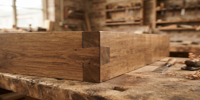
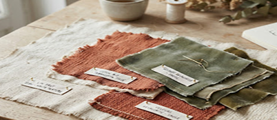
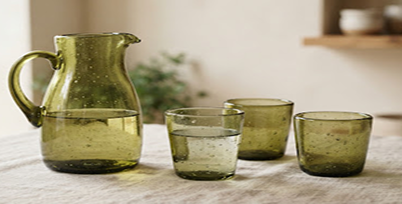
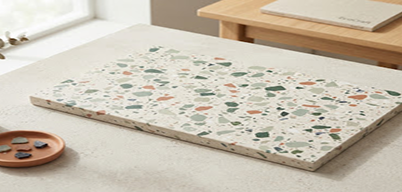

SOURCING VERTUEUX
Les 4 Grandes Filières Circulaires
Chaque gisement est sauvé de l'oubli grâce à des protocoles de tri drastiques et la complicité d'usines locales responsables.
Filière 01
Gisement : 4,8 T
Bois de Réemploi
Chênes séculaires issus de déconstructions de granges normandes, chutes massives d'ateliers et palettes traitées sans chimie.

Filière 02
Gisement : 3,1 T
Tissus & Lin Surcyclés
Fins de rouleaux haute couture, toiles de chanvre vintage et lins lavés non utilisés collectés auprès de filatures des Hauts-de-France.

Filière 03
Gisement : 3,9 T
Verre Fused & Soufflé
Bouteilles de domaines viticoles et chutes de miroiterie fondues au four solaire pour créer des textures organiques bulleuses.

Filière 04
Gisement : 2,4 T
Plastique Terrazzo
Bouchons PEHD et bouteilles collectés en circuits scolaires puis thermocompressés pour façonner des plateaux ultra-résistants et marbrés.
